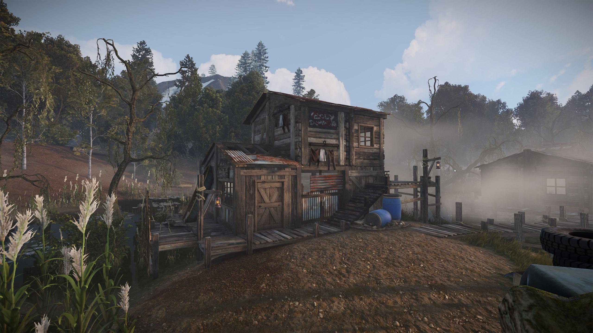
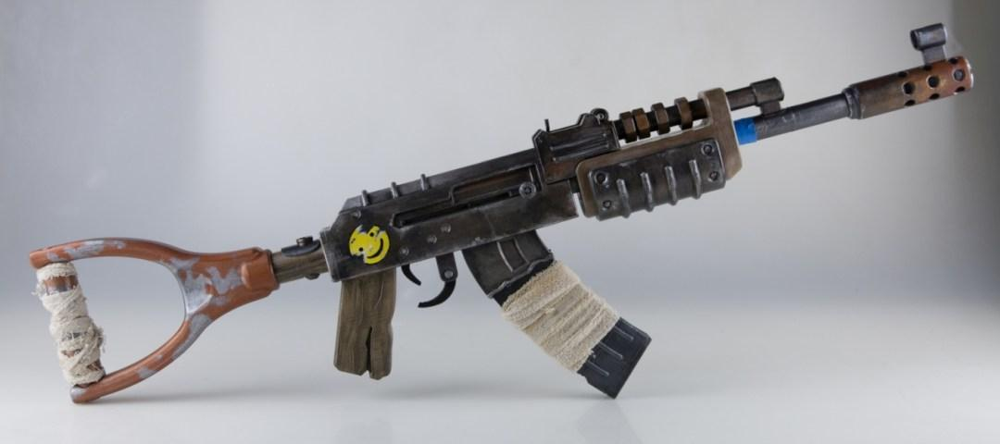

Az épületek a Rustban fontos szerepet játszanak a játékmenetben. A játékosok lehetőséget kapnak arra, hogy különböző épületeket építsenek és védelmi rendszereket hozzanak létre, mint például bázisok.
Link Épületek
Ami a fegyvereket illeti, a játékosok számos fegyvert használhatnak a túlélés érdekében. Ezek közé tartoznak például a pisztolyok, puskák és kézigránátok.
Link:Fegyverek
Csoport Tagjai:
Bársony Zétény
Bors Bence
Szabó Gergő